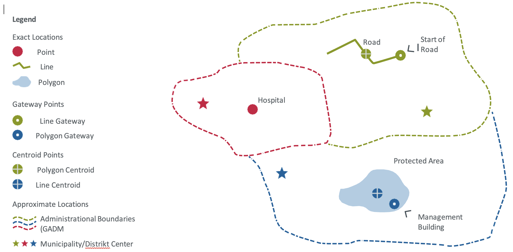
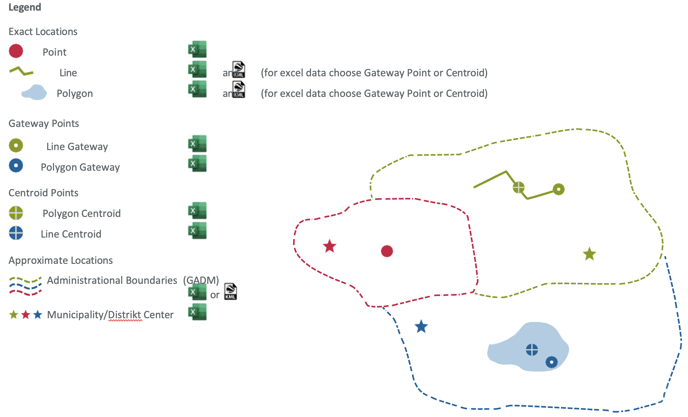
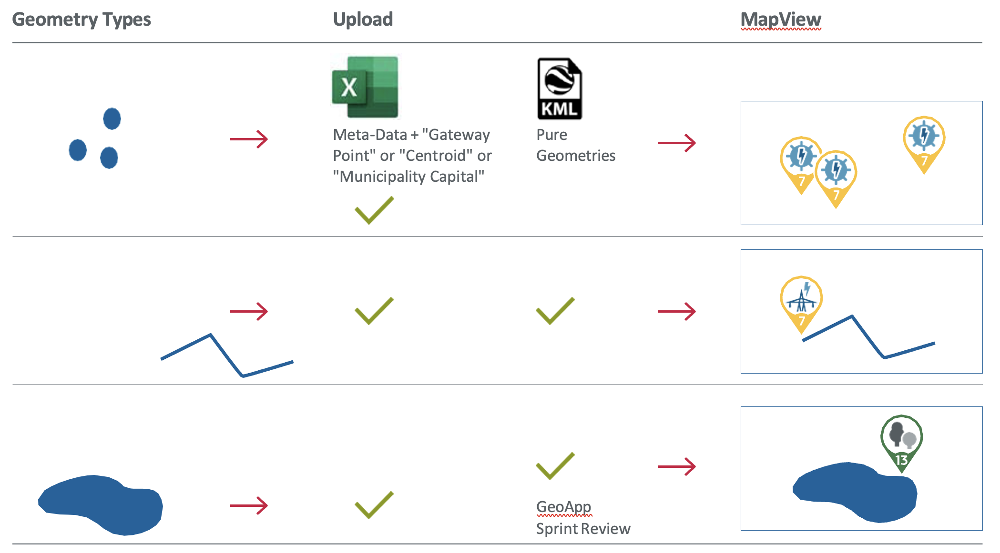

The KfW Geodata Model
In this Section we explain the FC Geodata Model according to which project location data should be collected as well as technical requirements for the data collection. The goal is to inform KfW staff, Project Executing Agencies (PEAs), consultants, and other external stakeholders responsible for data collection as to the types of location data to be collected and in what form.
Our FC Geodata Model is based on the International Aid Transparency Initiative (IATI) standard. The IATI Standard is used by international development organizations and allows harmonization of FC project location data across heterogenous projects. The data to be collected are subject to minimum requirements in the form of mandatory fields, and there are optional fields flexibly usable for collecting site-specific information.
Furthermore, projects are able to store single location points (e.g., the location of one power plant site) or a larger number of project sites and features (e.g., 300 locations of buildings in different sectors within the framework of a decentralization project). In addition, project sites with larger areas and more complex geometries (e.g., polygons of forest protection areas) are supported as well.
Please note, that KfW does not publish any exact coordinates of its project locations. Location data collection in fragile and conflict contexts should be treated with extra diligence.
General Notes on Geodata and Location Information
What is a project location?
A project location can consist of one or more features that are part of a financially supported activity where no further geographical discrimination regarding funding is possible. An example of a single-feature project location is a financially supported hospital in a specific location. An example of a project location with multiple features is a group of adjacent agricultural plots under a financed irrigation plan that benefits all producers in that area. Another example is a set of protected areas jointly financed from a fund if, and only if, further geographical discrimination as to the allocation of funds to specific areas is not possible. If discrimination is possible, data for multiple project locations (such as protected areas) and their financial allocation have to be collected. KfW highly encourages increasing geographical discrimination of financial flows to specific project locations to the maximum possible, as this affords greater aid transparency and financial accountability.
Difference between exact and approximate locations
For each project location there will be one exact1 or approximate geolocation data set. The exact geolocation designates the geographical end point of an international development assistance financial flow. Approximate locations can be used however, when no exact geoinformation is (yet) available, or such is not collected for other reasons (details see below).
For exact locations, geographical data are to be collected with GPS tools and eventually edited in a Geographical Information System (GIS). Approximate locations should be given on administrative scales using the GADM database as a global standard.
When to collect project location information
KfW strongly encourages the PEA and/or consultant staff to collect exact or approximate geo-coordinates as early on as possible in the project cycle to increase the usage potential of such data throughout the entire project cycle. Ideally, data should be collected already during the project preparation phase, e.g., as part of the feasibility study.
If no exact locations can be determined at this stage, approximate location should be used and later be checked during the project appraisal and inception stages (including possible transformation from approximate to exact location information). During project implementation, data should be updated at least annually in project progress reviews, and in order to reflect potential changes in the geographical allocation of funds, which are common in Financial Cooperation projects.
Geometrical characteristics of exact geo location information
'Exact1 locations' are measured via GPS devices, and geo-coordinates are to be collected as precisely as possible. For this purpose, three different geometry types can be used
-
Point geometries (e.g., a well or a hospital)
-
Line geometries (e.g., a road or transmission line)
-
Polygon geometries/shapes (e.g., a protected area or agricultural plots)
All exact project locations have to be collected at first as a point geometry that represents a gateway to the project location, irrespective of the actual feature geometry (i.e., also for lines and polygons). This may be for example the center of a road, a village adjacent to agricultural plots or the administration building of a protected forest. If there is a line or polygon geometry and no gateway can be defined, the geometrical center (centroid) is to be used. This information is to be collected in an Excel template (xlsx) or a future open-source based geodata collection tool providing the geographical coordinates of the gateway point (more information to be provided at KfW RMMV Guidebook.
In addition, line and polygon geometries have to be collected in KML2 format independently for each project site (details are given below in data formats and templates).

When to use approximate geo location information
Approximate1 locations can be used when no exact geoinformation is available (yet), or when exact location information should not be collected and stored. The approximate location option should be chosen if one or more of the following circumstances apply:
-
an exact project location has not (yet) been specified
-
an exact project location is not (yet) known or defined
-
the target location(s) is/are one or more administrative units.
In such cases, approximate location must be defined based on administrative units applying the Global Aviation Data Management (GADM) standard. GADM is used as a common standard for administrative units to afford harmonized and consistent collection of approximate locations.
Project Geodata Standard Formats and Templates
Link to Project Location Data Collection Template
You can find the current version of the projection location data collection template here.
Exact locations using the Excel Template (and potentially KML files)
As outlined above, all project locations should be collected using the Excel template (or a future open-source-based geodata collection tool) provided by KfW, which utilizes predefined categories under the IATI standard and built-in selection methods facilitating clean data entry. The geolocation is to be submitted in Excel with the geo-coordinates that can be obtained with a GPS tool. All coordinates are to be collected using WGS 843 as the coordinate reference system. WGS 84 is the de-facto standard for web mapping applications. Geo-coordinates are to be provided in the decimal place format 00.00000 in the order LONG, LAT (using at least 5 digits after the separator).
-
For point locations like buildings, filling out the exact GPS point location in the Excel template is sufficient. We estimate that about 90% of all project locations are point locations.
-
For line and polygon geometries, the gateway GPS point location is stored in Excel. In this case, geometry data should be supplied additionally in KML2 format separately for each project location. For multiple line or polygon locations, multiple KML files have to be submitted. A single KML file can, however, contain a single geometry (e.g., a road) or multiple geometries (e.g., multiple agricultural plots) that are linked to the gateway location collected in Excel. Multiple KML files should be submitted to KfW as .zip or .tar container. The data collector must ensure that the KfW staff responsible for uploading the data into the GeoApp are able to connect single KML files with project locations to the gateway points in Excel. To do so, the data collectors need to use the unique identifier given in the Excel template (column "Unique ID") together with the respective location name, separated by an underscore character "_" as filename for the KML data. An example of such a KML filename is "00345_Ouagadougou.kml". We follow this two-step approach for line and polygon geodata to ensure that all relevant metadata is collected in a clean way in Excel while still being able to submit relevant geometry information in a common geo-standard. It is strongly encouraged to submit additional geometry information in KML for locations larger than 1000 m (line) or 500 m2 (shapes) wherever possible, to enable KfW to see the spatial delimitation of our projects (e.g., a transmission line or the boundaries of a protected area). KML files are also to be submitted using WGS 84 as the coordinate reference system. The WG S84 datum is also used by OpenStreetMaps and Google Maps. The complete specification for OGC KML can be found here.
It is strongly encouraged to check the data before submission in GIS software, such as QGIS or Google Earth Pro. This reduces the need to go back and forth between the responsible project managers and the projects.
Approximate locations using Excel Template and GADM standard
Approximate project locations should be collected by referencing the respective administrative unit on the lowest administrative scale available in the GADM standard. GADM differentiates up to seven different levels, although for many developing countries, only three or four levels have yet been defined. Here are the most commonly available administrative unit levels:
-
level 0 (shape of the national boundary)
-
level 1 (region, province, governorate etc.)
-
level 2 (district, zone, department, municipality etc.)
-
level 3 (community, tehsil etc.)
If the respective administrative unit level has not been defined in GADM, you may instead indicate the GPS coordinates of the respective administrative unit center (municipality, district center or similar as a point location). In such case, you must specify the location as "approximate" in column No. 21 of the Excel template "Geographic Exactness according to IATI standard". This ensures that this location is not confused with the actual location of the site.
Mixing the administrative unit levels is not allowed because this would render the geo-data Model inconsistent.
The GIS database of GADM can be downloaded here and analyzed in a common GIS software such as QGIS, ArcGIS, or Google Earth Pro. Data collectors have to enter the GADM-defined polygon Geographic ID (GID), the GID level, and the utilized GADM database version. See Figure 2 below for more information:

Table 1: How to Collect Which Type of Location Data?
Exact
| Type of location data | Example | How to collect | Comment |
|---|---|---|---|
| Point | Hospital | Excel (LAT/LONG) | |
| Line | Road | Excel (LAT/LONG) + KML | Choose gateway point or centroid for Excel |
| Polygon | Protected Area | Excel (LAT/LONG) + KML | Choose gateway point or centroid for Excel |
| Point - Gateway | Start of a Road | Excel (LAT/LONG) | Complement with KML data if possible |
| Point - Polygon | Center of a protected area | Excel (LAT/LONG) | Complement with KML data if possible |
Approximate
| Type of location data | Example | How to collect | Comment |
|---|---|---|---|
| Administrational Boundaries | Excel (GADM) or Excel (LAT/LONG) + KML | If no GADM boundaries are available you can also upload the boundaries of the administrational area as a Polygon in KML. Supplement this information with Excel where you can. Give e.g., the centroid of the polygon | |
| Municipality/district Center | Excel (LAT/LONG) |

How to compare project location data from existing systems (R/MIS, GIS)?
If a Geographic Information System (GIS), (Remote) Management Information System (R/MIS) or Maintenance Management System (MMS) is used in the project, then the existing location IDs can also be entered in the Excel template as Project-Specific Location Identifiers (No. 7 in the table below), as defined in the Excel template. This makes it easier to check location data across project partner systems and verify the use of funds.
The KfW Project Location Geodata Model for Financial Cooperation
Below, the required project location data is defined for all FC projects. Project-related data is usually provided from both internal and external sources. The external data (see column "Source" with field entry "Input") has to be provided by the PEA or consultant staff using the template(s) provided by KfW and be validated by the responsible KfW PM/analyst before uploading.
Table 2: The KfW Project Location Geodata Model for Financial Cooperation
| Name | Type of data | Source | Mandatory | Asignment | Description |
|---|---|---|---|---|---|
| 1. Unique ID | Number | Input | Given | Per location | Every project location in the FC Geodata Model has to receive a unique location identifier number. This is the unique location identifier that is already provided in the Excel template in the Sub-Annex of the geodata collection ToR >Annex 3.2 |
| 2. KfW project No. (INPRO) | Number | Input | Yes | Per location | Every project location in the FC Geodata Model must be assigned to its respective KfW project number that is being provided by KfW in the geodata collection ToR > Annex 3.2 |
| 3. Project-specific location identifier | Text | Selection | No | Per location | If the location or activity has a project-specific identifier, e.g., a location code in the MIS of the PEA, this can be entered here. This enables logically connecting and comparing the location/activity in the KfW–system against the location/activity in the PEA-system. Otherwise the identifier is generated automatically (= No. 1 Unique ID in this table) |
| 4. Location name | Text | Input | Yes | Per location | Short summary of the main project activity (max. 12 characters or digits) |
| 5. Author of the data (=the legal owner) | Text | Input | Yes | Per location | Person and/or Legal Entity who collected the data (= legal authorship) |
| 6. Publishing restrictions due to security reasons | Select Text (yes/no) | Input | Yes | Per location | In fragile contexts, geolocation information must be protected and may not be published, for example in online maps, public ESIA or evaluation reports for security reasons (e.g., risk of conflict, repression/discrimination or terrorist attack) in the target area(s) |
| 7. Date of data collection or latest update | Date | Input | No | Per location | Date of data collection or latest update (if date of data collection is unknown) Form: DD.MM.YYYY (numbers only) |
| 8. Location activity status | Select Text | Input | Yes | Per location | As per IATI–Standard, see List of Activity Status options in the Excel–Template. Updates are only mandatory annually at the time of annual reporting for the respective funding client, as too many updates could otherwise be required depending on the project type. We recommend more frequent regular updating however for your own project monitoring |
| 9. Planned or actual start date of activity at the location | Date | Input | Yes | Per location | Ideally, the start of the activity / implementation at the respective location is defined in the geodata collection ToR > Annex 3.2 |
| 10. Activity description (general) | Text | Input | Yes | Per location | A short description of the main project activity in this location, e.g., hydropower plant construction or construction of small irrigation systems |
| 11. Additional activity description | Text | Input | No | Per location | Free text (in case you need to add other location–specific information like production volumes, progress values or a tag like “COVID-19”) |
| 12. Location type code IATI | Select Text | Selection | Yes | Per location | See List of Location Types in the Excel Template. This allows aggregating across location type and assignment of icons for publication on the map. Please use the most similar type, e.g., "well.". You can add the exact location type e.g., "extraction well" under "additional location types" if necessary. Definitions for all IATI-based location types can be found here |
| 13. Alternative location type | Text | Input | No | Per location | Free text for additional location types (in case you don’t find a suitable Location Type Name in the drop-down menu). This promotes systemic learning and allows us to identify additionally required location types |
| 14. Budget share | Currency number in EUR | Input | No | Per location | The budget share allocated to this location in €. The sum of all locations in a project should add up to the budget sum in INPRO/PMT, including overheads. The budget sum is provided in the geodata collection ToR > Annex 3.2 |
| 15. DAC 5 purpose classification | Text | Input | Yes | Per location | Assignment to the relevant DAC 5 Digit Codes from the respective 1 to 3 Codes defined for the project. For example, in a decentralization project, the construction of primary school locations is to be assigned to the respective Basic Education DAC 5-Code, while road rehabilitation sites within the same project are to be assigned to the respective Transport DAC 5-Code |
| 16. Geographic exactness according to IATI | Select Text (exact or approximate) | Input | Yes | Per location | The “exact” specification is to be used when the coder is confident of coding the exact geographically end destination of a financial flow. Flows that can only be traced to a general area or an approximate location are to be coded as “approximate.” In case of security risks (e.g., zones of conflict), we strongly recommend only publishing approximate locations |
If exact locations are known, use Geo-Coordinates:
| Name | Type of data | Source | Mandatory | Asignment | Description |
|---|---|---|---|---|---|
| 17. Geo-coordinates of the respective location gateway (Latitude/LAT) | Decimal | Input | Yes | Per location | Point: 1 coordinate (LAT). At least 5 digits after the dot for each coordinate. Only use if exact locations are known. Example: 50.12018514689011. Usage of WGS84 as Coordinate Reference System mandatory |
| 18. Geo-coordinates of the respective location gateway (Longitude/LONG) | Decimal | Input | Yes | Per location | Point: 1 coordinates (LONG). At least 5 digits after the dot for each coordinate. Only use if exact locations are known. Example: 8.655474047059236. Usage of WGS84 as Coordinate Reference System mandatory |
| 19. Related community/neighborhood/village | Text | Input | No | Per location | This is for manually adding smaller locations or administrative unit names not identified in global geo-coordinates lists such as GADM |
| 20. Additional geodata submitted as KML (Lines/Polygons) | Select Text (yes/no) | Input | Yes | Per location | Are you providing additional geodata with the geometry shapes for line and polygon data? It his recommended to supply this kind of information as it helps KfW to better identify the project areas. Data has to be submitted as separate KML files per location (one file per location entry in the table) |
Use approximate locations according to the GADM standard only if exact locations are not (yet) known or are not to be collected, processed or transmitted:
| Name | Type of data | Source | Mandatory | Asignment | Description |
|---|---|---|---|---|---|
| 21. GADM GID | Text | Input | Yes | Per approximate location | The Geographic ID (GID) of the administrative level that receives the financial flow. Try to use the lowest administrational level possible. For multiple approximate locations (administrational areas) use multiple data entries. Example value: VNM.1.1.1_1 for a specific area in Vietnam. Only use if exact locations are unknown |
| 22. GID level | Text | Input | Yes | Per approximate location | Administrative level within the GADM database (0-7). This should be the name of the column the GID was extracted from. Example value: GID_3 for level three. Only use if exact locations are unknown |
| 23. GADM version | Text | Input | Yes | Per approximate location | The version of the utilized GADM database is available. Example value: 4.0.4. Only use if exact locations are unknown |
-
KML (KMZ) is an open XML Standard for Points, Lines and Shapes. Officially named the OpenGIS KML Encoding Standard (OGC KML). It is maintained by the Open Geospatial Consortium, Inc. (OGC). Other Geoformats (e.g., Shapefiles or Geojson) can usually be converted to KML in Standard Geographic Information System (GIS) Software such as ArcGIS or QGIS. ↩↩
-
World Geodetic System 1984 (https://support.virtual-surveyor.com/en/support/solutions/articles/1000261351-what-is-wgs84) ↩